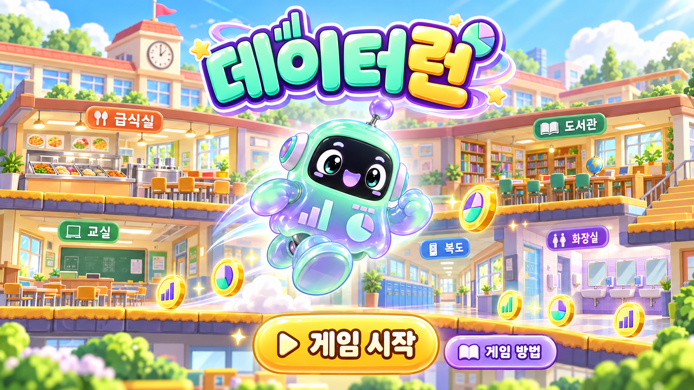

데이터 런

달리고 · 점프하고 · 문제 풀기!RUN · JUMP · LEARN
직접 점프하며 데이터 코인을 모아요!
장애물을 뛰어넘고, 장소마다 서로 다른 보너스 문제 3개를 맞혀 높은 점수를 만들어 보세요.
SPACE 또는 점프 버튼 · 소리 없이도 플레이 가능
점수0
코인 0
체력♥♥♥
급식실 · 속도 1단계
00:00
● 데이터 코인은 점수▲ 장애물은 점프로 통과? 퀴즈 정답은 코인 +20~50
달리기 완료!
최종 점수0
모은 코인0
보너스 정답0 / 0
달린 거리0m